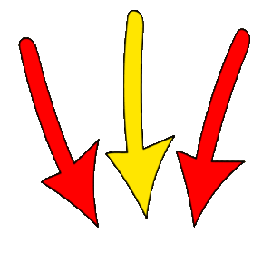
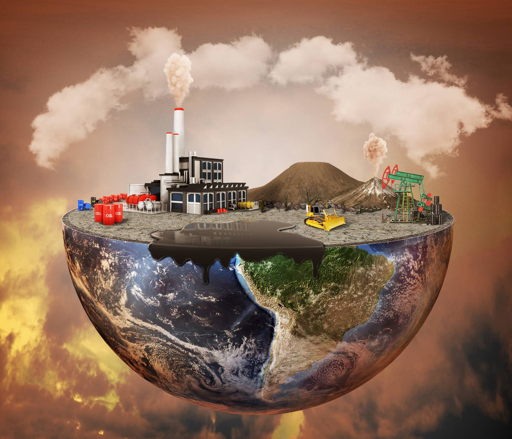
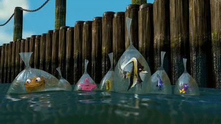

¿Que es la contaminación?.......
¿Que es la contaminación?.......
Cuando lees la palabra: CONTAMINACIÓN ¿Que es lo primero que se te viene a la mente?...
Supongo que : BASURA y déjame decirte que "Estas en lo correcto" La Contaminación es la basura que dejamos ya sea en la calle, parques,escuelas,bosques,montes, Etc. pero no solo la basura es contaminación también el humo de el fuego, el humo de los carros, las llantas de los vehículos, los químicos con los que limpiamos entre otras cosas.
La siguiente información podría serte útil:

La Contaminación...
El planeta nos recuerda continuamente, y cada vez de forma más recurrente, que si alteramos su equilibrio, las consecuencias son devastadoras a través de sequías, mega incendios, inundaciones, pérdida de la biodiversidad y desastres naturales cada vez más feroces. El cambio climático ya es una realidad y miles de personas, animales y plantas sufren sus efectos.
La contaminación no es más que un aliciente que hace que la crisis climática avance sin control. Nos referimos a contaminación ambiental al ingreso de sustancias químicas nocivas en un entorno determinado. Este fenómeno repercute en el equilibrio de dicho entorno y lo convierte en un ambiente inseguro.
El medio ambiente y sus ecosistemas sufren de manera directa los perjudiciales efectos. Y es que la contaminación ambiental es una alternación negativa del estado natural de los seres vivos que habitan el planeta.
A lo largo de la historia, la actividad humana ha sido la principal fuente de contaminación del planeta. Esto ha provocado la contaminación de nuestros entornos y la alteración del equilibrio ecológico del planeta. La contaminación ambiental supone un riesgo para la salud de todos los seres vivos del planeta.
La Organización Mundial de la Salud ya afirma que la mayor parte de los ciudadanos residen en áreas donde la contaminación ambiental está presente superando los límites establecidos como saludables. Y es que muchas son las sustancias que repercuten negativamente no solo en la salud humana también en la de miles de especies de animales y plantas que ven alterados sus hábitats por los efectos de la contaminación.

Contaminación del aire:
La niebla tóxica que flota por encima de las ciudades es la forma de contaminación del aire más común y evidente. No obstante, existen diferentes tipos de contaminación, visibles e invisibles, que contribuyen al calentamiento global. Por lo general, se considera contaminación del aire a cualquier sustancia, introducida en la atmósfera por las personas, que tenga un efecto perjudicial sobre los seres vivos y el medio ambiente.
El dióxido de carbono, un gas de efecto invernadero, es el contaminante que está causando en mayor medida el calentamiento de la Tierra. Si bien todos los seres vivos emiten dióxido de carbono al respirar, éste se considera por lo general contaminante cuando se asocia con coches, aviones, centrales eléctricas y otras actividades humanas que requieren el uso de combustibles fósiles como la gasolina y el gas natural. Durante los últimos 150 años, estas actividades han enviado a la atmósfera una cantidad de dióxido de carbono suficiente para aumentar los niveles de éste por encima de donde habían estado durante cientos de miles de años.
La mayor parte de la gente está de acuerdo en que, para luchar contra el calentamiento global, se deben tomar una serie de medidas. A nivel individual, un menor uso de coches y aviones, el reciclaje y la protección del medio ambiente son medidas que reducen la huella de carbono de una persona, es decir, la cantidad de dióxido de carbono liberada a la atmósfera debido a las acciones de cada individuo.
En un nivel más amplio, los gobiernos están tomando medidas para limitar las emisiones de dióxido de carbono y de otros gases de efecto invernadero. Una de ellas es el Protocolo de Kioto, un acuerdo entre países para reducir las emisiones de dióxido de carbono. Otro método es el de gravar las emisiones de carbono o aumentar los impuestos de la gasolina, para que tanto la gente como las empresas tengan más motivos para conservar la energía y contaminar menos.
 Fuente:Nacional Geográphic
Fuente:Nacional Geográphic
Contaminación del Agua:
Problema mundial, que en estas últimas décadas, se ha venido a presentar como uno de los más grandes conflictos venideros. El agua pura es un recurso renovable, sin embargo puede llegar a estar tan contaminada por las actividades humanas, que ya no sea útil, sino más bien nociva. Las aguas superficiales son en general las más vulnerables a la contaminación que las aguas subterráneas, por su exposición directa a la actividad humana.
La contaminación del agua es causada por las actividades del hombre es el resultado del vertido de desechos líquidos y sólidos directa o indirectamente al agua. Es un fenómeno ambiental de importancia, se inicia desde los primeros intentos de industrialización, para transformarse en un problema generalizado, a partir de la revolución industrial, iniciada a comienzos del siglo XIX.
Otro de los problemas que causa la contaminación del agua , son la perdida de ecosistemas acuáticos ya que al contaminar el agua , muchos de estos animales mueren al ingerir basura o mueren por que quedan atrapados en ella.

Para mas información, visita: SIMAS
Contaminación del suelo:
La contaminación del suelo es una alteración del suelo por la presencia de sustancias químicas producidas por el hombre. En otras palabras, es la degradación o destrucción de la superficie y del suelo como resultado de la acción directa o indirecta de los seres humanos.
Un suelo contaminado también podrá contaminar el aire y el agua, expandiendo así el rango de afección.
A continuación, veremos los tipos de contaminación del suelo:
-
Contaminación natural: Se concentra toxicidad entre los que determinan algunos elementos metálicos presentes en los minerales originales de ciertas rocas. Esta contaminación es producida debido a la presencia de compuestos naturales en el suelo. Algunos ejemplos son las erupciones volcánicas o los incendios forestales.
-
Contaminación antrópica: Se produce cuando los contaminantes son introducidos en la atmósfera a consecuencia de las actividades humanas, como por ejemplo los gases producidos por los automóviles, calefactores, procesos industriales etc.
-
Contaminación por sustancias químicas: Son generadas por el hombre, provocando daños y cambios en el ecosistema del suelo y afectando al agua y al aire. Algunos ejemplos son los pesticidas, hidrocarburos y solventes.
-
Contaminación por eliminación de residuos: Se produce cuando se lleva a cabo una acumulación de residuos en un lugar determinado, contaminando de forma directa el suelo tras su degradación, exposición al ambiente y lixiviación.
-
Contaminación por infiltración: Se desarrolla cuando el agua de la superficie es filtrado por el suelo, produciendo un efecto que dependerá directamente de la cantidad del agua en superficie y del tipo de suelo.
-
Contaminación por superficies de escorrentía: Producido por el arrastre de contaminantes como fertilizantes, petróleo y plaguicidas, debido a la presencia de nieve o lluvias que erosionan y se filtran en el suelo.
-
Contaminación por instalaciones comerciales e industriales abandonadas: También denominado como terreno baldío que determinadas industrias y comercios dejan abandonados. Estos, poseen concentraciones de elementos, contenedores y tambores que tienen contaminantes ambientales y residuos peligrosos.
Cada día vemos noticias en los medios sobre la contaminación que se produce en el suelo, afectando al entorno en el que vivimos y trabajamos. La gran mayoría de las ocasiones, esta contaminación es producida por el hombre mediante las actividades agrícolas, industriales, la eliminación de residuos, la deforestación etc. La contaminación no solo afecta al suelo, si no que también nos afecta a nosotros.
¡Es momento de pararnos a reflexionar, generar autocrítica y pensar en que futuro queremos vivir y vivirán las siguientes GENERECIONES!

si quieres saber mas del tema visita: La Trichera RECICLADOS.com
Reflexión:
Después de leer la información ¿Que piensas?...
Tal vez te diste cuenta de todo el daño que le hacemos a nuestro mundo y de lo peligrosos que somos para el, es hora de hacer lo correcto. es hora de cambiar nuestra forma de vivir , es hora de cambiar nuestros habitos, se que es difícil pero no imposible .
Aun ESTAMOS A TIEMPO de remediar nuestro daño , aun estamos a tiempo de ver a UNA TIERRA limpia, con mas seres vivos y lo mas importante a una TIERRA CON COLOR y no a una tierra cubierta por una nube gris en donde no entra luz , en donde se respira químicos, humo etc.
Algunas personas NO se preocupan por el medio ambiente, piensan que la contaminación es MENTIRA cuando no es a si. Las personas que piensan así, son las mismas que matan a los animales, destruyen arboles solo por que quieren y no se dan cuenta del daño que provocan a TODO lo que los rodea, por eso es importante es hacerlos entrar en razón para que dejen de hacer lo que hacen y que no afecten a los demás.
Página principal: